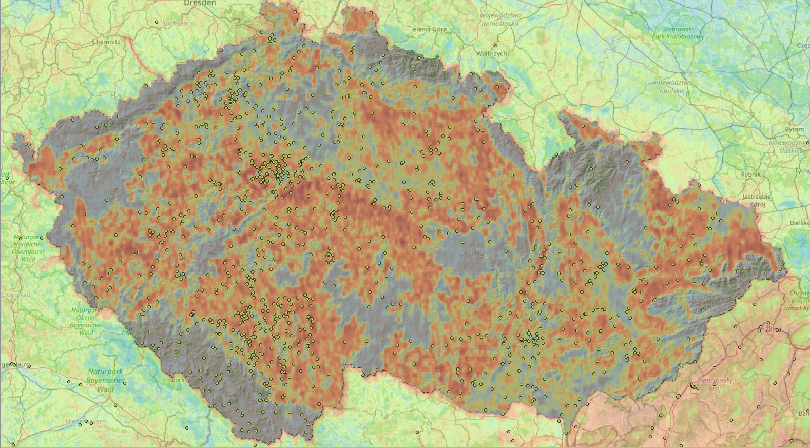

An open-source pipeline for extracting, geocoding, and spatially modelling prehistoric settlement data from multilingual Central European literature.
This is a proof-of-concept computational pipeline that automatically extracts archaeological site data from academic literature, geocodes the locations, and feeds the results into a predictive spatial model — identifying areas likely to contain undiscovered prehistoric sites in Central Europe.
The project processes papers written in Czech, Slovak, German, Polish, Hungarian, and Romanian — languages largely absent from existing English-language archaeological databases. This multilingual approach is its core original contribution.
Built entirely with free, open-source tools running locally on a personal computer. No institutional funding, no proprietary software, no API costs.
Five automated steps transform a folder of academic PDFs into a probability heatmap overlaid on a map of Central Europe.
597 PDFs with cryptic filenames automatically renamed using LLM-extracted bibliographic metadata.
Each paper is chunked and fed to a local language model which extracts structured site data — name, period, type, location, finds.
Location descriptions are resolved to coordinates using the Nominatim geocoder. Sites outside the CE bounding box are automatically filtered.
Geocoded sites exported as GeoPackage and GeoJSON for visualisation and manual review in QGIS.
Random Forest classifier trained on known site locations with environmental covariates generates a probability heatmap.
The following results were generated from the full corpus run — 281 papers processed, yielding 3,011 geocoded sites of which 169 high and medium confidence sites were used for model training.
Multiple archaeological periods are represented across the full corpus: Neolithic (106 sites), Middle Bronze Age (42), Bell Beaker (17), LBK/Linearbandkeramik (18), Eneolithic (31), Palaeolithic (8), and others.
The map below shows the model's output after training on 169 known sites using four real environmental layers. Known site locations (white circles) are overlaid on the probability surface.

Spatial block CV AUC: 0.756 ± 0.136 — Feature importances: elevation 27.2% · slope 25.3% · aspect 25.4% · distance to water 16.4% · soil 5.7%
Block 5 at 1.000 with only 13 test sites is a statistical artefact — a perfect score from too few data points, not a genuine result. The high variance (±0.136) reflects uneven model performance across regions, which is itself an informative finding.
What is AUC? The model scores every location from 0 to 1. AUC (Area Under the ROC Curve) measures how reliably it ranks a real site above a random non-site location — across every possible score threshold at once. An AUC of 0.5 means the model is no better than chance; 1.0 is perfect. A score of 0.756 means that in 75.6% of random comparisons, the model correctly scores a known site higher than a non-site. The ±0.012 shows this result is stable across five independent geographic folds.
The predictive model answers one question: given the environmental characteristics of a location, how similar is it to places where people chose to settle or bury their dead in the past?
The model receives two sets of locations: 169 known archaeological sites and 1,000 random background points. For each it looks up five environmental values. It learns which combinations correlate with site presence and which with absence.
Once trained, the model evaluates every pixel in the study area, looks up its environmental values, and outputs a probability between 0 and 1. The result is a continuous surface showing areas of high archaeological potential.
Rather than asking one decision tree for an answer, the model asks 200 — each trained on a slightly different random subset of data. The final prediction is the average of all 200 votes. This makes the result robust to noise: no single quirk in the training data can dominate the outcome.
The study area is divided into geographic blocks. The model trains on all blocks except one, then tests its predictions on the held-out block — rotating through every block in turn. This prevents nearby sites from leaking information across the training/test boundary, which would artificially inflate accuracy.
The model only knows where sites are — not where they definitively are not. Background points are random locations used as a statistical stand-in for absence. This means the output is a relative probability surface: high values indicate terrain similar to known sites, not confirmed site locations.
Each time a tree makes a split — "elevation above 300m, go left" — it measures how much purer the resulting groups become. Features that consistently produce clean, informative splits accumulate higher importance scores. The reported percentages sum to 100% across all 200 trees.
Before training, all five features are rescaled to the same units — mean zero, standard deviation one. This prevents elevation (in hundreds of metres) from dominating aspect (which ranges −1 to 1) simply because its numbers are larger. Every feature competes on equal terms.
Nearby locations share similar environmental characteristics — Tobler's First Law of Geography. This creates a problem: randomly split training and test data, and the model looks artificially accurate because it has effectively seen near-identical examples during training. Spatial blocks enforce a genuine gap between what the model learns and what it is tested on.
A model that memorises its training data performs well on what it has seen but fails on new locations. Two parameters limit tree complexity: maximum depth of 6 (trees cannot grow arbitrarily elaborate) and minimum 5 samples per leaf (no split is made on fewer than 5 data points). The spatial block CV AUC of 0.756 ± 0.136 across five geographic folds suggests the model generalises rather than memorises.
The raw model output changes value sharply pixel by pixel. Archaeological site potential in reality transitions gradually across a landscape. A Gaussian blur blends each pixel with its neighbours — closer neighbours contributing more — producing smooth gradients that represent genuine zones of potential rather than isolated lucky pixels.
A kernel density map simply shows where known sites cluster — high density where archaeologists have already looked, low density where they have not. This is circular. A probability surface predicts where the environment is favourable regardless of survey history, flagging unsurveyed areas as high potential. This distinction is the core scientific contribution of the approach.
169 site locations versus 1,000 background points — the model sees roughly six times more non-sites than sites. The ratio is a deliberate methodological choice: too few background points and the model cannot learn what ordinary terrain looks like; too many and it biases toward predicting absence everywhere.
This is a proof of concept at an early stage of development. Several important limitations apply.
The corpus reflects potential bias inherent in manual source selection by a single researcher. The geographic distribution of extracted sites may over- or under-represent certain regions or periods relative to the true archaeological record. The geocoding step introduces additional uncertainty, particularly for sites described only at the district or region level. Results should be treated as hypotheses for further investigation, not as conclusions. The predictive model outputs probability surfaces — not confirmed site locations.
Approximately 49% of geocoding attempts failed or returned only broad regional coordinates. This will be addressed by improving the extraction prompt to capture more specific place names. The static environmental layers (modern elevation, current river positions) are an imperfect proxy for past landscapes, particularly for Palaeolithic and Mesolithic sites.
The model operates at 90m raster resolution — roughly one pixel per 700m × 1km at Czech latitudes. Prehistoric settlement frequently clustered in narrow river terrace corridors 200–400m wide. At this resolution, a single pixel averages the terrace with the adjacent valley slope, causing the model to systematically underestimate potential in some of the most archaeologically productive landscapes in Bohemia — including the Elbe (Labe) valley corridor near Litoměřice, the Ohře valley, and parts of the Polabí lowlands. This is a known limitation addressable through higher resolution LiDAR-derived input data, not through parameter adjustment.
The model parameters were not adjusted to match known archaeological distributions. Tuning a predictive model toward expected outcomes — however well-intentioned — transforms it from a scientific instrument into a sophisticated redrawing of already-known archaeology. Where the model underperforms relative to known site distributions, this is documented as a data or resolution limitation, not corrected by fitting. This commitment to methodological integrity is especially important given the history of spatially-inflated archaeological claims in Central European scholarship.
The project is committed to spatial cross-validation as the only acceptable validation method. Separate models will be trained per archaeological period and site type. An independent validation set of known sites — withheld from training — will provide the final honest performance assessment.
Every component of this pipeline runs locally, requires no subscription, and costs nothing to operate.
Every step in the pipeline saves its results to disk after each processed item. This means runs can be safely interrupted at any point — by choice or by circumstance — and resumed exactly where they left off with no data loss. There is no need to process the entire corpus before seeing results.
In practice this enables a deliberately iterative workflow: process a subset, run the geocoder and export, open QGIS and evaluate the preliminary map, then continue processing while the partial results are already usable. Early runs at 9% corpus completion already produced geographically meaningful results — demonstrating that the pipeline can be evaluated and iterated long before full processing is complete.
This design also means the corpus can grow over time without restarting from scratch. New papers added to the collection are simply picked up on the next run.
Improve geocoding precision by tuning the extraction prompt to capture village-level place names — currently ~49% of attempts fail or return only regional coordinates. Integrate Czech ČÚZK LiDAR derivatives to address the river valley resolution problem. Implement geographic clustering for spatial blocks rather than the current longitudinal strip approach.
Build OCR preprocessing step for the 185 scanned PDFs — older Czech and Slovak journals from the 1930s–1960s containing primary source data unavailable in any digital database. Add loess distribution layer from ESDAC. Implement per-period models separating Palaeolithic, Neolithic, Eneolithic, and Bronze Age.
Expand corpus to Hungarian and Romanian language sources. Integrate negative evidence — survey reports explicitly recording no finds — to address the pseudo-absence problem. Publish methodology as an open-source contribution to computational archaeology.